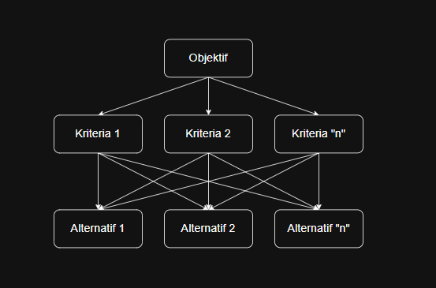
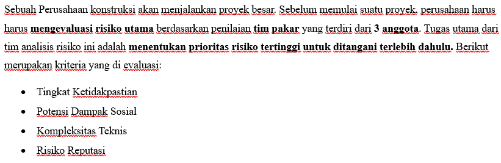
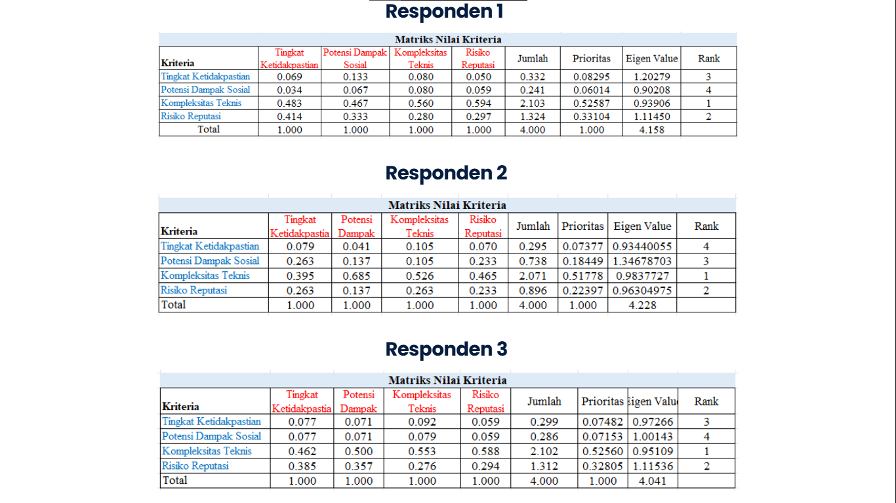
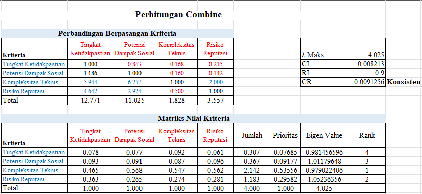

<div id="portfolio-page" class="portfolio-page-content">
    <div class="portfolio-page-wrapper">
        <div class="portfolio-page-nav">
            <div class="nav-item portfolio-page-prev-next">
                <a class="ajax-page-load" href="portfolio-project-pertamina.html"><i class="lnr lnr-chevron-left"></i></a>
                <a class="ajax-page-load" href="portfolio-project-skripsi-ritel.html"><i class="lnr lnr-chevron-right"></i></a>
            </div>
            <div class="nav-item portfolio-page-close-button">
                <a id="portfolio-page-close-button" href="#"><i class="lnr lnr-cross"></i></a>
            </div>
        </div>

        <div class="portfolio-page-title">
            <h1>Analisis risiko proyek dan pemilihan vendor terbaik menggunakan keilmuan MCDM</h1>
        </div>

        <div class="row">
            <div class="col-sm-8 col-md-8 portfolio-block">
                <div class="owl-carousel portfolio-page-carousel">
                    <div class="item">
                        
                    </div>
                </div>

                <div>
                    <p class="deskripsi-tambahan">
                        Simulasi ini dilakukan untuk membuktikan bahwa keilmuan <b><i>Multi Criteria Decision Making</i></b> dapat dilakukan di proses bisnis suatu perusahaan. Untuk permasalahan <b>metode AHP</b> akan lebih cocok dengan data yang bersifat <b>sangat subjektif</b>, sehingga AHP ini dapat menjadi dasar pengambilan keputusan berdasarkan data subjektif dari beberapa responden. Sedangkan <b>metode TOPSIS</b> dapat digunakan untuk menentukan alternatif berdasarkan <b>data kuantitatif</b> yang sudah ada.
                    </p>

                    <p class="deskripsi-tambahan">
                        <b>Metode AHP</b>
                    </p>
                    <div class="owl-carousel portfolio-page-carousel">
                        <div class="item">
                            
                        </div>
                        <div class="item">
                            
                        </div>
                        <div class="item">
                            
                        </div>
                    </div>
                    <p class="deskripsi-tambahan">
                        Dapat dilihat bahwa <b><i>data given</i> <u>(Slide 1)</u></b> tidak memiliki data kuantitatif, sehingga akan lebih baik jika menggunakan <b>metode AHP.</b> perhitungan diawali dengan pembobotan kriteria oleh setiap responden, pembobotan tidak boleh dilakukan sembarangan karena harus memperhatikan nilai <b><i>consistency ratio</i></b> harus dibawah <b>0,1</b> dan <b><i>eigen value</i> <u>(Slide 2)</u>.</b> kemudian dilanjutkan dengan perhitungan gabungan antara seluruh responden dengan cara hasil pembobotan setiap <b>responden dikalikan terus di pangkat (1/banyaknya responden) <u>(Slide 3)</u>.</b> kemudian dilakukan normalisasi lagi dan pada akhirnya kriteria dapat dilihat urutannya. File excel dapat dilihat <a href="https://undipmail-my.sharepoint.com/:x:/r/personal/nurlintangas_students_undip_ac_id/Documents/M2/MCDM%20AHP%20Portfolio.xlsx?d=w0214a77d5dba44699c12d017d06000ea&csf=1&web=1&e=DfSAWd">disini</a> 
                    </p>

                    <p class="deskripsi-tambahan">
                        <b>Metode TOPSIS</b>
                    </p>
                    <div class="owl-carousel portfolio-page-carousel">
                        <div class="item">
                            
                        </div>
                        <div class="item">
                            
                        </div>
                        <div class="item">
                            
                        </div>
                    </div>
                    <p class="deskripsi-tambahan">
                        Studi kasus Simulasi untuk metode TOPSIS dapat dilihat pada <i>data given</i><b><u> (Slide 1)</u></b>.
                    </p>
                </div>

                <script type="text/javascript">
                    jQuery(document).ready(function($){
                        $('.portfolio-page-carousel').imagesLoaded(function(){
                            $('.portfolio-page-carousel').owlCarousel({
                                smartSpeed:1200,
                                items: 1,
                                loop: true,
                                dots: true,
                                nav: true,
                                navText: false,
                                margin: 10,
                                autoHeight:true
                            });
                        });
                    });
                </script>
            </div>

            <div class="col-sm-4 col-md-4 portfolio-block">
                <!-- Project Description -->
                <div class="project-description">
                    <div class="block-title">
                        <h3>Description</h3>
                    </div>
                    <ul class="project-general-info">
                        <li><p><i class="lnr lnr-user"></i>Nurlintang Asriono Sudarmawan</p></li>
                        <li><p><i class="lnr lnr-link"></i> <a href="excel/MCDM AHP Portfolio.xlsx" target="_blank"> File Excel AHP</a></p></li>
                        <li><p><i class="lnr lnr-link"></i> <a href="excel/MCDM TOPSIS Portfolio.xlsx" target="_blank"> File Excel TOPSIS</a></p></li>
                        <li><p><i class="lnr lnr-calendar-full"></i> 25 September, 2024</p></li>
                    </ul>

                    <p class="text-justify">Simulasi implementasi keilmuan MCDM pada kondisi nyata dilakukan dengan menggunakan metode AHP dan TOPSIS.</p>
                    <!-- /Project Description -->

                    <!-- Technology -->
                    <div class="tags-block">
                        <div class="block-title">
                            <h3>Technology</h3>
                        </div>
                        <ul class="tags">
                            <li><a>Excel</a></li>
                        </ul>
                    </div>
                    <!-- /Technology -->

                    <!-- Skill -->
                    <div class="tags-block">
                        <div class="block-title">
                            <h3>Skill</h3>
                        </div>
                        <ul class="tags">
                            <li><a>Analytical Thinking</a></li>
                            <li><a>Problem Solving</a></li>
                            <li><a>Quantitative Analysis</a></li>
                            <li><a>Decision Making</a></li>
                        </ul>
                    </div>
                    <!-- /skill -->
                </div>
                <!-- Project Description -->
            </div>
        </div>
    </div>
</div>
